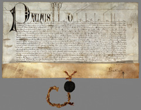

|
Si tratta di una collezione formata originariamente con i
documenti pergamenacei estratti per la maggior parte dagli archivi
delle corporazioni religiose soppresse e degli ospedali e, per
il rimanente, con acquisti effettuati soprattutto fra il 1884
e gli inizi del nostro secolo. In seguito vi sono state inserite
le serie membranacee dei fondi archivistici acquisiti nel corso
del tempo.
I documenti sono disposti in due sezioni: nella prima sono ordinati
per luoghi; nella seconda per tipo di documento; infine vi è un'appendice
in cui sono raggruppate le pergamene di varia e incerta provenienza.
Negli inventari dei fondi delle corporazioni religiose, degli
ospedali o di altre istituzioni sono di regola segnalati anche
i documenti membranacei inseriti nella collezione.
Consulenza sul fondo: Angela Lanconelli
Progetto della base di dati: Paolo Buonora
Immissione ed elaborazione dati: Alessandra Daga, Luciana Devoti,
Stefania Glori, Nicola Pastina, Fabio Simonelli, Gianni Venditti
Acquisizione immagini: Enrica Serinaldi, Nicoletta Valente, Luciana
Devoti, Alessio Rinaldini, Laura Primangeli
Coordinamento: Vincenzo De Meo
Sviluppo applicativo: Stefano Tonazzi
Progettazione e assistenza sistemistica: Leonardo Valcamonici
(CASPUR) |
|

Premostatensi ai SS. Alessio e Bonifacio,
4/101, litterae executoriae di Paolo IV, 1469
|